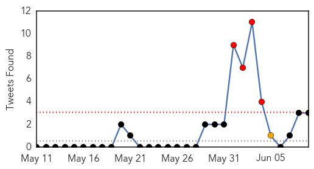
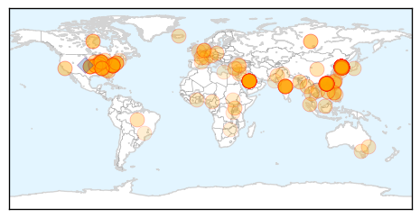
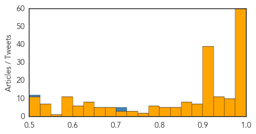
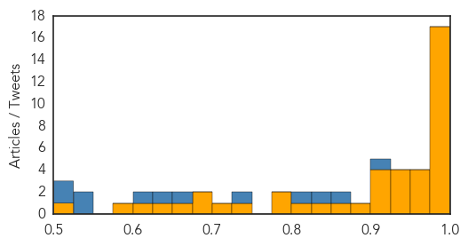

Unknown
30-Day Web Trend
30-Day Twitter Trend
4 alerts, 1 warnings

Article Locations

Article Confidences
Top Articles:
- 0.999
- As MERS Outbreak Surges, Genetic Tests Show Virus Hasn't Mutated
- 0.999
- (LEAD) S. Korea reports seventh MERS death, 8 new cases
- 0.999
- Health experts allay public fears in MERS-hit South Korea
- 0.999
- CDC Urges Health Agencies to Watch for Bird Flu in Humans
- 0.999
- 2,500 quarantined in South Korea during MERS outbreak
- 0.999
- Seventh Person Dies of MERS in South Korea
- 0.999
- (LEAD) S. Korea reports seventh MERS death, 8 new cases
- 0.999
- (3rd LD) S. Korea reports seventh MERS death, 8 new cases
- 0.999
- (2nd LD) S. Korea reports seventh MERS death, 8 new cases
- 0.999
- WHO Evaluates S. Korean Response to MERS
- 0.999
- South Korea MERS outbreak: Death toll rises to 7
- 0.998
- South Korea reports seventh death, 8 more Mers cases in outbreak, East Asia News & Top Stories
- 0.998
- 7 dead, thousands quarantined in South Korea MERS outbreak - KBZK.com
- 0.998
- S Korea reports 8 more MERS cases, 7th death
- 0.998
- Alerts against South Korea travel as MERS spreads
- 0.998
- MERS Outbreak Claims Seventh Victim in South Korea
- 0.997
- South Korea says its deadly MERS outbreak may have peaked
- 0.997
- “MERS” spreaded in South Korea, alert raised
- 0.997
- Health Ministry tries to block MERS outbreak
- 0.997
- WHO asks countries to remain alert on MERS
- 0.997
- Containment efforts: Spike in MERS cases puts focus on South Korea's delayed response- Nikkei Asian Review
- 0.996
- UK won't issue South Korea travel advisory after Hong Kong issues virus "red alert"
- 0.996
- South Korea reports seventh fatality in MERS outbreak
- 0.996
- MERS starts to spread more widely in Korea-INSIDE Korea JoongAng Daily
- 0.996
- MERS outbreak: 2,300-plus quarantined; 1,800 schools closed in South Korea
- 0.996
- MERS infections in S. Korea rise to 95 with 8 new cases
- 0.995
- Photo of Wedding Guests in Face Masks Reveals Infectious Disease Fears
- 0.995
- Total number of MERS cases rises to 1,244
- 0.995
- South Korea reports 7th death, but slower pace of MERS cases
- 0.994
- WHO: Worldwide MERS cases rises above 1,200
- 0.994
- China on guard against MERS despite lack of travel warning
- 0.994
- The World On Arirang
- 0.993
- South Korea Confirms Sixth MERS Death, First Teen Patient
- 0.993
- South Korea reports 8 more MERS cases, 7th death in outbreak
- 0.992
- South Korea MERS cases continue to climb
- 0.992
- South Korea Records 8 More MERS Cases, 1 Additional Death; Government Vows To Stop Outbreak
- 0.991
- Death Toll Rises in South Korea from MERS Outbreak
- 0.991
- Hong Kong on 'red alert' as South Korean MERS virus spreads
- 0.991
- Hong Kong issues MERS alert against South Korea travel
- 0.990
- MERS Camel flu virus: Hong Kong issues red alert over MERS amid fears of deadly epidemic
- 0.989
- HK issues ‘red alert’ against S. Korea travel – BorneoPost Online
- 0.989
- Hong Kong to issue 'red travel alert' to South Korea as MERS spreads
- 0.989
- Samsung Medical faces criticism for failure to share information
- 0.989
- Hong Kong issues 'red alert' against South Korea travel due to MERS
- 0.989
- WHO, S.Korea to conduct joint probe into MERS spread - Xinhua
- 0.989
- Alerts against South Korea travel as #MERS spreads
- 0.989
- The World On Arirang
- 0.988
- S. Korea reports 6th MERS death, 1st teenage patient
- 0.988
- MERS suspects slam response
- 0.988
- Hong Kong to issue "red alert" travel alert to South Korea as Mers spreads, Government & Economy
Showing top 50 articles...
Top Tweets:
- 0.724
- RT: S.Korea reports 7th death 8 new cases of MERS (95 infections so far) as the outbreak threatens to spread nationwide http://…
- 0.704
- RT: South Korea reports 13 new MERS cases & 2 more deaths on Wednesday bringing total number of people with infections to 108 …
- 0.502
- RT: The number of MERS diagnosed patient grows up to 108 so far in S.Korea. 13 people added.
Ebola
30-Day Web Trend
0 alerts, 0 warnings

30-Day Twitter Trend
0 alerts, 0 warnings

Article Locations

Article Confidences
Top Articles:
- 1.000
- MGH patient monitored for Ebola no longer suspected of having virus
- 1.000
- 4 lessons from Ebola wars
- 0.999
- Ebola virus didn't mutate into more dangerous strain
- 0.999
- Cases of Ebola recede in West Africa, but fears of recurrence remain
- 0.999
- MERS death toll reaches seven; Hong Kong issues red-alert travel to South Korea
- 0.999
- Ebola crisis: UN's Ebola mission HQ in Ghana to close
- 0.997
- Labor calls for inquiry into Australia's response to Ebola crisis in West Africa
- 0.996
- Indian Woman Being Treated in U.S. for Drug-Resistant Tuberculosis
- 0.996
- Researcher helps discover Ebola virus in eye fluid of recovered survivor
- 0.995
- Hospital clears traveler who was monitored for possible Ebola
- 0.993
- Preventing the next global pandemic
- 0.992
- SA researcher helps discover ebola virus in eye fluid of recovered survivor
- 0.992
- Flinders News> Blog Archive > SA researcher helps discover ebola virus in eye fluid of recovered survivor
- 0.986
- No Ghanaian should be a guinea pig for Ebola experiments
- 0.985
- To Help Contain the Spread of Ebola in Sub-region Liberia National Red Cross Intervenes in Sierra Leone Ebola Fight
- 0.982
- UN praises Ghana for hosting Ebola response mission during outbreak -
- 0.981
- Why Mers doesn't stand a chance in drama-loving Philippines, Asia News & Top Stories
- 0.973
- Labor, Greens question Australia's Ebola response
- 0.973
- Labor, Greens question Australia's Ebola response
- 0.971
- Toronto Star by Dr. Sarilee Kahn, Assistant Professor of Social Work at McGill University
- 0.962
- S/Leone: NGO coalition wins international award
- 0.946
- Students Paid For Ebola Drugs Trial – Daily Guide Ghana
- 0.943
- Last year's Ebola strain weaker than that of 1976: study
- 0.931
- Health Adviser Presents Medical Supplies and Equipment to Hospitals
- 0.927
- Last year's Ebola strain weaker than that of 1976: study
- 0.917
- Liberia, Guinea Hold Cross Border Ebola Surveillance Dialogue
- 0.916
- Statement at the Opening of SLAJ 2015 AGM Protocols « Awoko Newspaper
- 0.913
- NDC Kicks Against Ebola Vaccine
- 0.913
- “The threat of another outbreak from a vaccine preventable disease is real” : Health Minister warns
- 0.879
- Perencevich on infection control in South Korea's MERS outbreak
- 0.868
- Could an Ebola Treatment Already Exist?
- 0.844
- 48th CBRN Brigade completes Ebola mission in Liberia
- 0.821
- United Nations World Food Programme - Fighting Hunger Worldwide
- 0.799
- SAVSU® Technologies' specialized shipping container used in Ebola vaccine clinical trials by the World Health Organization
- 0.777
- SAVSU® Technologies' specialized shipping container used in Ebola... -- SANTA FE, New Mexico, June 9, 2015 /PR Newswire India/ --
- 0.733
- EU rehabilitates 10 Peripheral Health Units « Awoko Newspaper
- 0.702
- Exclusive: Coulter Hammers Obama Administration For Hiding Identity, Immigration Status Of Foreigner Who Brought In Extreme Tuberculosis
- 0.695
- Pres. Sirleaf congratulates Sweden
- 0.684
- gods of Klefe not responsible for strange deaths
- 0.668
- Sierra Leone Foundation for New Democracy Kick-off
- 0.637
- Praise for South West service men and women involved in fight against Ebola
- 0.603
- Ebola crisis: UN's Ebola mission HQ in Ghana to close - Panorama
- 0.582
- Immunising Every Child is our Investment VP Foh
- 0.510
- (LEAD) N. Korea unlikely to close Kaesong complex over wage row
Top Tweets:
- 0.908
- Cases of Ebola recede in West Africa but fears of recurrence remain - Los Angeles Times http://t.co/0s1qY69Oys ebola EVD
- 0.864
- Researcher helps discover Ebola virus in eye fluid of recovered survivor - Medical Xpress http://t.co/Gf3jqXpVFW ebola EVD
- 0.826
- Most of the jobs that are available now are Ebola-related. In Sierra Leone Graduating Under Ebola http://t.co/eJuuQwAGCC via
- 0.805
- Study: Ebola virus didn't mutate into more dangerous strain - USA TODAY http://t.co/8pJSEK7tr2 ebola EVD
- 0.743
- Just In: Boston patient monitored for possible Ebola virus - Boston Herald http://t.co/sAi0RYEoKr ebola EVD
- 0.657
- Sierra Leone fieldpost: 'I believe Ebola victims deserve respect to the grave' - The Guardian http://t.co/3zXRFAKri2 ebola EVD
- 0.649
- Could an Ebola Treatment Already Exist? - BU Today http://t.co/6LPcxOQTTI ebola EVD
- 0.605
- Does focus on Ebola miss other deadly diseases? - Futurity: Research News http://t.co/NZWqfdvSZp ebola EVD
- 0.534
- 30 times fewer people are being diagnosed with Ebola each week than in September last year. EbolaResponse
- 0.532
- Here's the Difference Between MERS and Ebola - TIME http://t.co/GqFAV2bigV ebola EVD
- 0.522
- How Louise Troh Survived Ebola - KERA News http://t.co/fL141ssDe2 ebola EVD
- 0.516
- Patient at MGH being monitored for possible Ebola - My Fox Boston http://t.co/I6MMpgtBry ebola EVD